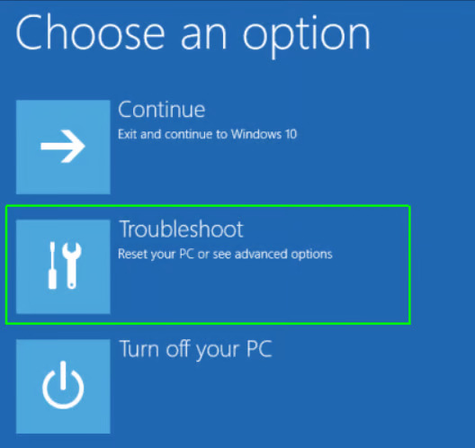

IT WILL BLUESCREEN, OR FREEZE AND THEN BLUESCREEN YOUR PC, DONT WORRY, THATS OK.



By default our in-built spoofer is disabled in all our solutions, to learn how to use it, read this topic.
To start the use of our spoofer read the guide on how to use the launcher parameters here.
After reading the parameters topic you may go on.
In case your account was blocked, or you need to change your account do this:
To use the in-built spoofer you have to create .bat file with parameters of launch.
If you didnt understand the text guide, then you can either read the more in-depth guide, or watch our video-guide.
In some games, such as Delta Force, spoofing partitions is required in order to bypass the HWID ban.
HAVING A USB WITH WINDOWS INSTALLATOR IS REQUIRED
IT WILL BLUESCREEN, OR FREEZE AND THEN BLUESCREEN YOUR PC, DONT WORRY, THATS OK.

diskpart
list volumeselect volume *volume number*Example:
select volume 0YOU HAVE TO TYPE YOUR VOLUME NUMBER WITHOUT THE * *
assign letter=NIt is okay for the FAT32 volume to have label and letter assigned to it. It is also okay for the fat32 volume to be non-existent, just skip part 10 and 11 if you do not have one.
Now type in:
select volume *volume number*Example:
select volume 3assign letter=Zexitbcdboot N:\Windows /s Z: /f UEFIIf you do not have one, then type in:
bcdboot N:\WindowsexitAnd proceed to boot into the windows.
Thats it, now your partitions are spoofed.